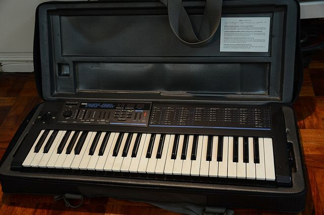

Scheda 061 · 1983 · Giappone
Korg Poly-800
Costava 795 dollari e andava a pile. Atkins, May e Saunderson, i tre del techno di Detroit, ne avevano uno
Otto voci programmabili sotto gli 800 dollari, e un solo filtro per tutte.
Il suono vero · 0:34
Un Korg Poly-800 MKI non modificato: un basso con un suono programmato dall'autore.
0:00 / 0:34
Registrazione di Ryan Scott (ry ry of tokyo) · pubblico dominio · archive.org · estratto di 34 s, volume normalizzato
- LANCIO
- 1983
- PREZZO
- 795 $
- VOCI
- 8 (o 4)
- TASTI
- 49
La macchinaChe cos'è
49 tasti senza dinamica, 64 programmi in memoria e un sequencer da 256 passi. Va a pile e ha i ganci per la tracolla, quindi si può suonare in piedi come una tastiera da collo. Ha un joystick per modulare. Le voci sono 8, ma ogni voce ha due oscillatori: se li accendete tutti e due, il suono si fa più pieno e le voci scendono a 4. I programmi si salvano su cassetta.
Chi l'ha costruitaKorg
Lo presenta Korg nel 1983. Il nome di chi l'ha disegnato non l'ho trovato in nessuna fonte, e non ne invento uno. Nel 1984 esce l'EX-800, la stessa elettronica senza tastiera, da montare in un rack. Nel 1986 il Poly-800 II: al posto del chorus un delay digitale, e finalmente i messaggi SysEx per scambiare i suoni col computer.
Come funzionaCosa c'è dentro
Gli oscillatori sono digitali (DCO) e fanno dente di sega e onda quadra, con del rumore bianco da mescolare. Ogni oscillatore ha un inviluppo a 6 stadi: Attack, Decay, Break Point, Slope, Sustain, Release. Il filtro passa-basso risonante però è uno solo, condiviso da tutte le voci. Per questo lo chiamano paraphonic e non polifonico fino in fondo.
Chi l'ha usataNei dischi
- Juan Atkinsuno dei tre di Belleville, Detroit: ne aveva uno in studio
- Derrick Mayce l'ha nelle liste degli strumenti prima del 1990
- Kevin Saundersonce l'aveva intorno al 1988, quando nasce Inner City
L'aneddotoUna storia
Il prezzo dipende da chi lo racconta. 795 dollari per Wikipedia, «meno di 800» nella pubblicità Korg su Musician nel 1984, 575 sterline per l'Inghilterra. Anche gli anni non tornano: 1983-1987 da una parte, 1984-1986 dall'altra. Sul filtro unico invece tutti sono d'accordo: The Mix lo chiama un difetto grosso, da string machine. Nel 1994 la stessa rivista lo dava usato a 100-130 sterline, con il voto più alto al rapporto qualità-prezzo.
Avvertenze
Con i due oscillatori accesi le voci scendono da 8 a 4. Contate quanti tasti suonate insieme, prima di dire che è un otto voci.
Il reel
La versione corta
Le cose da sapere in fila, una schermata alla volta, col suono della macchina quando ne esiste una registrazione libera. Aprilo su Instagram ↗
Il carosello
Le 6 tavole


Da dove viene
Fonti
- «Korg Poly-800» — Wikipedia (EN): 1983, 795 $, 8 voci, DCO, filtro unico, 64 programmi, EX-800 e Poly-800 II verificata il 2026-10-16
- «Total Recall: Korg Poly-800» — The Mix, settembre 1994: 575 sterline, filtro unico, 4 voci in doppio, elenco di chi l'ha usato verificata il 2026-10-16
- «Korg Poly-800 Polyphonic Synthesizer» — SMEM (museo): i tre di Belleville, tecnologia e prezzo verificata il 2026-10-16
Foto: rico blanco · CC BY-SA 2.0 · Wikimedia Commons (un Poly-800 II, la versione del 1986)
Foto nelle tavole: rico blanco · CC BY-SA 2.0 · Wikimedia Commons
Suono: Registrazione di Ryan Scott (ry ry of tokyo) · pubblico dominio · archive.org · estratto di 34 s, volume normalizzato